到 R70 为止，性能究竟卡在哪里？
日期：2026-10-13。范围：原有数据、冻结版本、NSS 本地重训权重。这是回顾性诊断，不是新模型成绩。
先看结论
当前证据支持“已学会一些稳定的实例规律，但不同任务的剩余难点不同”，不支持“完全没有学到东西”，也不支持“已经找到一个共同大 bug 或准确率上限”。
- 同问题、同真实规模置换预测后，Ours 和 NSS 都明显退化。总体选择频率完全保留，结果却变差，因此频率相似不能解释全部成绩。
- 平台包含两种不同困难：CVRP、闭合 TW 任务明显学会了实例相关的候选匹配；若干开放任务基本锁定少数方法，难点转为这几种方法的逐例胜负。
- 多轮改动并非“不改变答案”：它们纠正与新增错误大量抵消，同时有一批长期共同错误。共同错误不是不可学的证明。
- 残余 regret 并非主要由数值并列造成。不能用提高容忍度后的命中率替代原 Top1，也不能把小成本差直接称为标签噪声。
- NSS 本地重训有相同类型的低 Top1、漏选部分方法与共享错例，但其成本表现常优于更高 Top1 的 Ours。原论文没有提供足以重做这些诊断的逐例输出，因此不能宣称原论文也存在完全相同机制。
- 本报告的条件先验、浅层区域及分数条件表只用于定位可迁移信号，不发布新模型、不根据 test 重新选权重。是否继续研究，要看可重复的条件规律与实际收益，不是继续要求下一个 Encoder 必须突破。
1. 数据与解释边界
- 18 个原任务；各 train 10,000、validation/test 各 1,000。LIB 为 49 个 TSPLIB、100 个 CVRPLIB。
- 原始 FP64 成本、原生
ind 为主口径，按名称对齐候选；Top1 是命中这一原生 winner。另列 FP32 argmin 以桥接历史 NSS 对比。
- NSS 仅有 TSP/CVRP 两套模型，不计算它的“18 任务 ALL”。新导出完整 val/test/LIB 和各 2,000 个按规模分层的训练样本；训练样本不是完整训练集。
- 没有新训练神经网络、没有求解器复跑、没有读取 R71/未来版本 test、没有重新选 checkpoint。
- 全任务结果按问题等权宏平均；
actual regret 是逐实例 (selected - oracle) / oracle 的均值。原始 mean cost、均值之比 gap 和平均 relative regret 分开。
- 本项目已经多轮查看历史 test；本轮是探索性分析，不能把显著-looking 的子群当成独立确认。配对 bootstrap 只描述固定预测的样本波动，不代表训练 seed 方差。
- 区间没有重建跨问题基础实例关联；若不同变体含同源实例，跨任务区间可能偏窄，不能把18,000行自动当成完全独立的样本或作严格显著性认证。
- 八个带 B 的旧场景有已知可行域语义冲突。本轮按要求不修复、不重标，相关结果是旧部署场景的统计，不是统一可行域的认证。
- R45A 是稳定历史锚点，R60B 是近期验证参考，R70B 是当前版本；不因本报告的 test 表再挑一个“最佳版本”。完整输入路径见
prediction_manifest.csv。
2. 平台是真的，但并不是所有版本作出同样选择
| 模型 |
Val Top1 % |
Test Top1 % |
Val regret % |
Test regret % |
| R34 |
未提供 |
47.344 |
未提供 |
0.982 |
| R43A |
48.839 |
47.944 |
0.928 |
0.943 |
| R45A |
49.117 |
47.911 |
0.926 |
0.943 |
| R60B |
49.361 |
48.244 |
0.923 |
0.940 |
| R64A |
48.694 |
47.378 |
0.939 |
0.981 |
| R64B |
48.761 |
47.411 |
0.941 |
0.978 |
| R65B |
48.722 |
47.639 |
0.946 |
0.978 |
| R69B |
47.800 |
46.322 |
1.042 |
1.062 |
| R70B |
48.383 |
46.717 |
0.989 |
1.005 |
R70B 相对 R45A，18,000 个 test 中改选 4,670 例（25.94%），纠正 1,682 例，新增错误 1,897 例；两者都错时，还有 473 例变便宜、617 例变贵、1例改选但等成本。不是网络没有反应，而是变化没有形成可靠的净收益。
R60B 相对 R45A 的 test Top1 只提高 0.333 个百分点，配对区间包含零；regret 也没有清晰拉开。不要把不同版本、不同 epoch 当作多个独立 seed。
从 15 个有完整 test 逐例预测的版本看：共同选错 28.59% 的实例，贡献 R70B 49.17% 的 regret；另有大量错误在版本间交换。即使把这些版本简单多数投票，Top1 也只是 48.22%、regret 0.9365%。这只是固定版本集合的诊断，未计多模型推理开销，不作为正式集成成绩。
“任意一个版本曾经选对”的事后并集是 71.41%，但需要先知道每例哪个版本正确，既不可部署，也不是准确率上限，更不是已经证明 70% 可学。
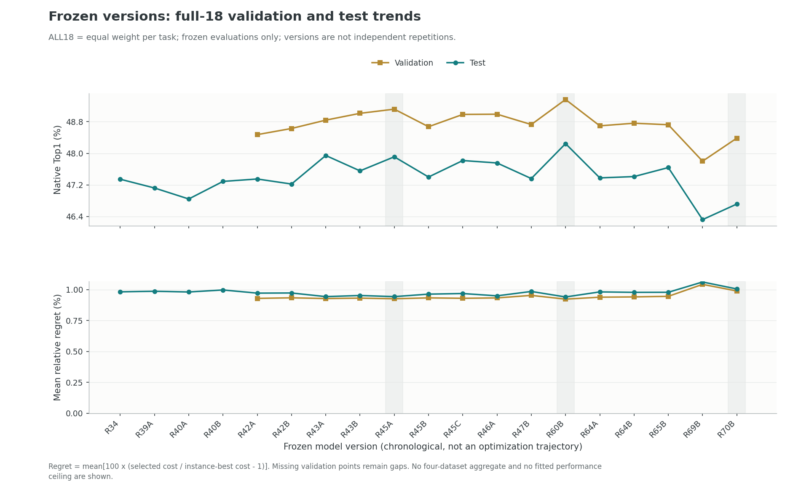
图1：冻结权重的验证与测试轨迹。版本横轴不是独立随机重复。
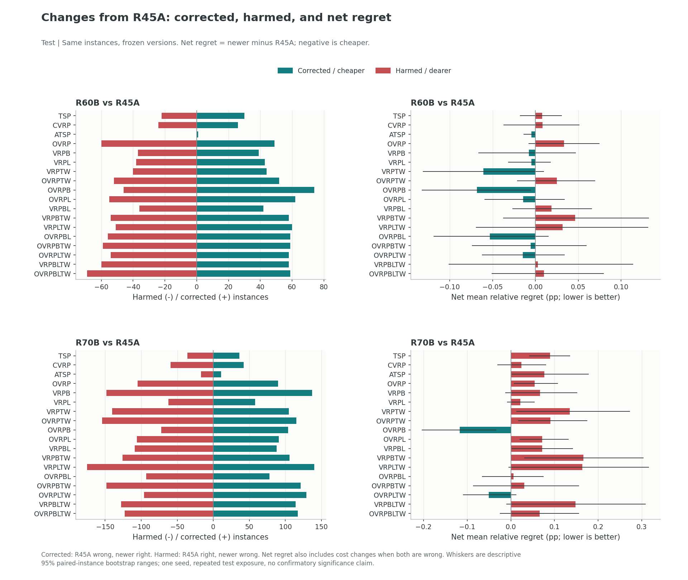
图2：纠正与伤害、两者都错时的成本变化必须一起看。
3. “我是不是只学了方法的总体分布？”答案是否定的
将完整分数向量在同问题、同真实规模内置换 100 次，保留选方法频率、候选池与分数分布。唯一被破坏的是实例与分数的对应。每组至少两例；单例规模不放宽，保持原预测，并另报可置换子集。
实现为节省计算只置换各分数行的argmax；对这里报告的Top1/regret，这与整行分数置换后再取argmax完全等价，不代表同时检查了置换后的全部排名或校准。
| 模型 | 问题 | 原 Top1 % | 置换 Top1 % | 原 regret % | 置换 regret % |
| --- | --- | --- | --- | --- | --- |
| R45A | TSP | 35.900 | 28.839 | 0.650 | 1.165 |
| R45A | CVRP | 48.100 | 25.669 | 0.614 | 1.959 |
| R45A | ATSP | 77.500 | 76.048 | 0.327 | 0.406 |
| R45A | VRPTW | 43.500 | 25.402 | 1.412 | 5.456 |
| R45A | OVRPTW | 49.100 | 45.590 | 0.819 | 1.020 |
| R45A | VRPLTW | 44.500 | 25.154 | 1.387 | 5.589 |
| R45A | OVRPBLTW | 49.500 | 47.227 | 1.170 | 1.339 |
| R70B | TSP | 35.900 | 28.307 | 0.740 | 1.267 |
| R70B | CVRP | 46.400 | 24.534 | 0.638 | 1.988 |
| R70B | ATSP | 76.900 | 75.941 | 0.404 | 0.419 |
| R70B | VRPTW | 40.000 | 24.985 | 1.547 | 5.603 |
| R70B | OVRPTW | 45.200 | 43.695 | 0.910 | 1.084 |
| R70B | VRPLTW | 41.000 | 23.601 | 1.551 | 5.680 |
| R70B | OVRPBLTW | 48.900 | 46.488 | 1.236 | 1.350 |
| NSS | TSP | 35.100 | 29.448 | 0.609 | 1.072 |
| NSS | CVRP | 45.900 | 26.315 | 0.570 | 1.811 |
| R45A | ALL18 | 47.911 | 39.432 | 0.943 | 2.117 |
| R70B | ALL18 | 46.717 | 39.171 | 1.005 | 2.130 |
TSP/CVRP test 可置换覆盖率分别为89.6%/90.3%，其余任务100%；ALL 为98.88%。主表中未置换的单例保持不动，因此不是放宽规模后的比较。完整可置换子集见 instance_signal.csv。
最关键的反例是 CVRP 和闭合 TW：相同规模下，模型明显知道哪些实例应交给不同方法。 ATSP 的高准确率与规模条件更相关，其置换前后差距小。若干开放任务则只使用了较少的额外实例信号。这些结论说明信号使用量不均衡，不能证明剩余误差没有信号。
置换区间是重复随机置换的分布，不是总体置信区间或“准确率天花板”。
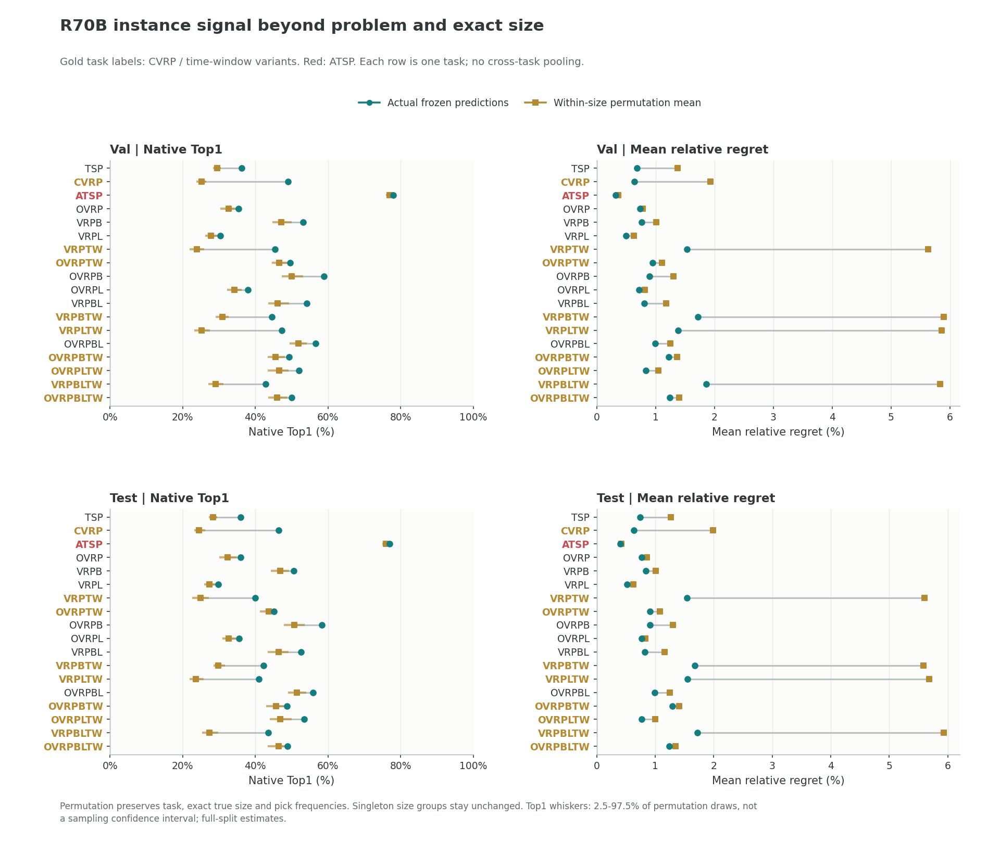
图3：任务差异很大，ALL Top1 不能定位统一瓶颈。
4. 每个问题的机会与剩余损失
| 问题 |
R45A Top1 % |
R70B Top1 % |
R70置换 Top1 % |
R70 regret % |
R70置换 regret % |
事后最佳常量 regret % |
| TSP |
35.900 |
35.900 |
28.307 |
0.740 |
1.267 |
1.075 |
| CVRP |
48.100 |
46.400 |
24.534 |
0.638 |
1.988 |
0.973 |
| ATSP |
77.500 |
76.900 |
75.941 |
0.404 |
0.419 |
2.797 |
| OVRP |
37.400 |
35.900 |
32.442 |
0.767 |
0.857 |
0.826 |
| VRPB |
51.700 |
50.600 |
46.880 |
0.835 |
1.011 |
0.848 |
| VRPL |
30.200 |
29.800 |
27.365 |
0.515 |
0.624 |
0.533 |
| VRPTW |
43.500 |
40.000 |
24.985 |
1.547 |
5.603 |
5.845 |
| OVRPTW |
49.100 |
45.200 |
43.695 |
0.910 |
1.084 |
0.923 |
| OVRPB |
55.100 |
58.300 |
50.688 |
0.911 |
1.304 |
1.038 |
| OVRPL |
37.000 |
35.500 |
32.651 |
0.766 |
0.830 |
0.830 |
| VRPBL |
54.700 |
52.600 |
46.398 |
0.818 |
1.157 |
0.781 |
| VRPBTW |
44.300 |
42.300 |
29.768 |
1.678 |
5.584 |
3.880 |
| VRPLTW |
44.500 |
41.000 |
23.601 |
1.551 |
5.680 |
5.607 |
| OVRPBL |
57.400 |
55.900 |
51.388 |
0.990 |
1.247 |
1.049 |
| OVRPBTW |
51.400 |
48.700 |
45.724 |
1.296 |
1.405 |
1.300 |
| OVRPLTW |
50.200 |
53.500 |
46.816 |
0.770 |
1.002 |
0.900 |
| VRPBLTW |
44.900 |
43.500 |
27.408 |
1.723 |
5.933 |
4.132 |
| OVRPBLTW |
49.500 |
48.900 |
46.488 |
1.236 |
1.350 |
1.195 |
最后一列是在该评估集上事后挑出的“固定选一个方法”的最低平均 relative regret，只描述候选池互补空间，不能作为训练得到的可部署基线。训练选定的固定方法与条件先验另外列出。必须区分“总体就比较好的方法”与“给每个实例找到合适方法”。
- CVRP、VRPTW、VRPLTW：模型已经消除了大量实例依赖的成本风险。继续研究有任务价值，但要找到它尚未利用的优势条件，不能再以低 Top1 证明没学到。
- ATSP：高 Top1 的相当部分可由规模条件解释；相对粗先验的增量更重要，不能仅凭绝对准确率宣布表征最好。
- OVRPTW、OVRPBLTW 等：模型相对合适常量的成本优势有限。这里有真实的有限池 Oracle 空间，却尚未定位强而可迁移的逐例胜负规则。
- TSP、VRPL：多方法分担赢家，不能只研究 MOEL/MTL；静态常量、候选召回、风险偏好与精细排序需要分开。
5. 找到前几名，与排对第一名是两种能力
固定组合仅用 train 的 winner 频率确定，带到 test；表中的 Top2/3 是“包含 winner”的覆盖率，不是执行一次 solver 的成功率。
| 问题 | 固定 Top2覆盖 % | R70 Top2 % | 固定 Top3覆盖 % | R70 Top3 % |
| --- | --- | --- | --- | --- |
| TSP | 43.60 | 61.30 | 62.10 | 74.40 |
| CVRP | 49.80 | 68.60 | 64.50 | 81.10 |
| ATSP | 75.90 | 96.50 | 90.70 | 99.30 |
| VRPTW | 47.90 | 73.90 | 66.70 | 90.60 |
| OVRPTW | 90.80 | 90.80 | 99.90 | 99.90 |
| OVRPBLTW | 92.50 | 92.50 | 100.00 | 100.00 |
OVRPTW、OVRPBLTW 的高 Top3 几乎可以由固定强方法解释；不能把接近100%的 Top3 自动归功于精细的实例排名。反过来，CVRP 和 VRPTW 有明显的动态覆盖增益。
另一个 train 定义的控制按最小平均 relative gap 选固定方法组合，结果在 fixed_portfolios.csv。频率最优组合与成本最优组合并不相同。组合内取最小成本都需要多个 solver 结果，仅作预算不同的诊断，不能冒充单方法成绩。
R70B 的全任务 test 错误分解如下：
| winner位置 | 错误数 | 占错误 % | 占regret % |
| --- | --- | --- | --- |
| rank2 | 6147 | 64.09 | 64.36 |
| rank3 | 1951 | 20.34 | 20.31 |
| beyond3 | 1493 | 15.57 | 15.32 |
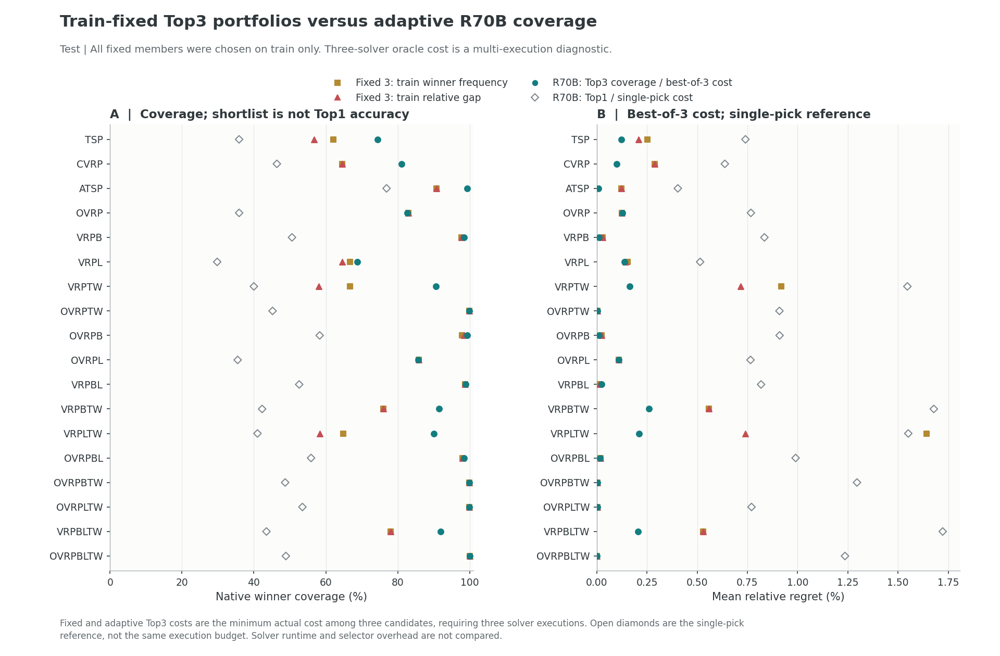
图4：动态候选覆盖与训练固定三方法覆盖的区别。
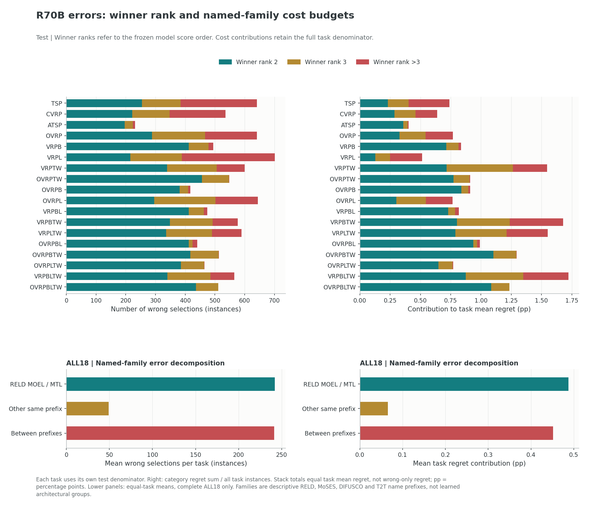
图5：错误数量与错误成本要分别记账。
6. 不能把剩余错误主要解释为近似并列
下面按真实第一、第二方法的成本差分桶，而不是模型置信度或模型选错后的 regret。
| 真实前二差距 | 实例数 | 错误数 | 占错误 % | 占regret % |
| --- | --- | --- | --- | --- |
| exact_tie | 38 | 29 | 0.30 | 0.01 |
| (0,0.1]% | 1390 | 919 | 9.58 | 2.91 |
| (0.1,0.5]% | 4244 | 2660 | 27.73 | 11.73 |
| (0.5,1]% | 3458 | 1951 | 20.34 | 13.04 |
| (1,2]% | 3774 | 1980 | 20.64 | 21.41 |
| >2% | 5096 | 2052 | 21.40 | 50.90 |
差距超过2%的实例贡献约一半剩余成本损失。因此，“Top1 低只是因为所有赢家成本太接近”并不能解释整个18任务。TSP 的确更细：其 test 前二差距中位数仅0.287%，69.9%的实例不超过0.5%；CVRP中位数0.556%。不能从 TSP 推广到全部 MVRP。
R70B 允许0.1% regret时命中49.69%，允许0.5%时59.99%，允许1%时70.37%。这些是额外的成本容忍指标，严格 Top1 仍是46.72%。数值很近也不等于求解随机或不可预测；大差距也不保证仅凭有限训练样本就容易预测。
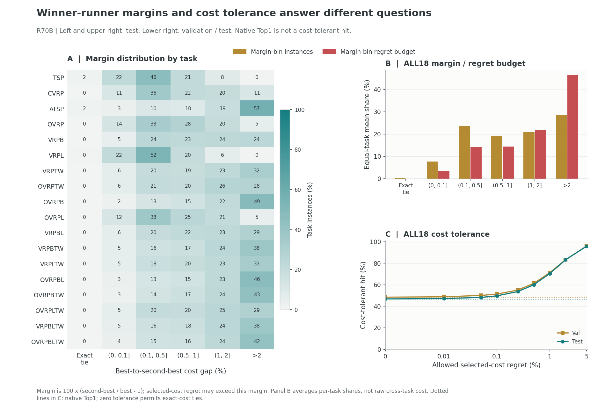
图6：真实成本差分布与成本容忍曲线，不替代原始 Top1。
7. 哪些方法与错误长期被忽略？
R70B test 的损失不仅来自一个方法对：
| 比较类别 | 错误数 | 占regret % |
| --- | --- | --- |
| MOEL_MTL | 4360 | 48.52 |
| between_named_families | 4343 | 44.94 |
| other_within_named_family | 888 | 6.54 |
同族仅按 RELD、MoSES、DIFUSCO、T2T 名称前缀定义，是描述性分组。MOEL/MTL依然重要，但非该方法对的错误贡献约一半成本损失，不应再次把整体问题压缩成这一个二分类。
以下是15个完整版本共同漏掉的 winner。这里的成本贡献按各任务均值列出；转换成 ALL 贡献需除以18。
| 问题 | 真正winner | 共同漏选数 | 该方法赢家总数 | 任务内regret贡献 pp |
| --- | --- | --- | --- | --- |
| OVRPBL | RELD_MOEL | 141 | 427 | 0.3612 |
| VRPBTW | MVMOE | 99 | 99 | 0.2692 |
| OVRPB | RELD_MOEL | 103 | 404 | 0.2599 |
| VRPBLTW | MoSES_RF | 59 | 80 | 0.2453 |
| OVRPBLTW | RELD_MOEL | 83 | 447 | 0.2280 |
| VRPBLTW | MVMOE | 92 | 92 | 0.2141 |
| VRPBLTW | RELD_MOEL | 59 | 295 | 0.2103 |
| OVRPTW | RELD_MTL | 137 | 479 | 0.2103 |
| VRPLTW | RouteFinder | 52 | 155 | 0.1992 |
| VRPBTW | RELD_MOEL | 85 | 297 | 0.1966 |
| OVRPBTW | MVMOE | 95 | 95 | 0.1898 |
| TSP | LEHD | 178 | 185 | 0.1807 |
这给出了比“再换一种结构”更具体的解释对象：例如 TSP 的 LEHD，以及闭合 TW 中的 RouteFinder/MoSES，哪些输入区域让它们具备稳定优势？但名单来自历史结果，不能据此在同一 test 设计规则后再宣布验证成功。
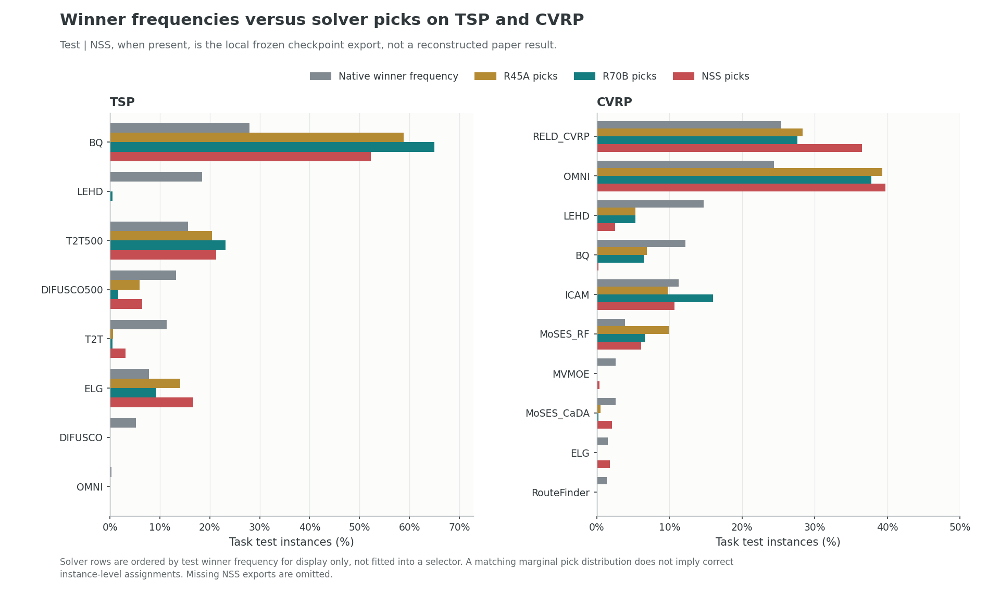
图7：赢家频率、模型选择频率与成本相关的漏选不是同一个量。
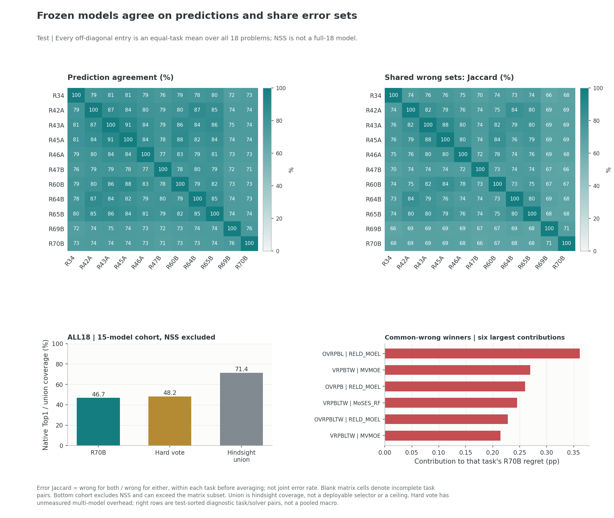
图8：预测相近及共同错误，不代表这些相关模型提供独立的不可学证据。
8. 为什么不应该强制预测频率匹配 winner 频率？
频繁小幅获胜、但失败时损失较大的方法，可能被成本导向决策保守使用。TSP 的例子如下；“独有贡献”是移除该方法后 Oracle 平均变差多少，仍是事后有限池诊断。
| 方法 | 赢家频率 % | 获胜时平均领先 % | 落败时平均损失 % | 固定选它的p95 regret % | 独有成本贡献 pp |
| --- | --- | --- | --- | --- | --- |
| BQ | 28.0000 | 0.4736 | 2.3999 | 7.4884 | 0.1293 |
| DIFUSCO | 5.2000 | 0.3838 | 1.6623 | 3.5991 | 0.0196 |
| DIFUSCO500 | 13.2000 | 0.4270 | 1.2399 | 2.8346 | 0.0534 |
| LEHD | 18.5000 | 0.3727 | 2.8336 | 9.1318 | 0.0689 |
| T2T | 11.4000 | 0.3872 | 1.3872 | 3.0864 | 0.0441 |
| T2T500 | 15.6000 | 0.4806 | 1.3704 | 3.1749 | 0.0750 |
R70B在TSP选BQ约65%，但BQ的winner频率28%；LEHD频率18.5%，模型只选约0.5%。NSS也几乎不选LEHD。这证明行为偏好与真实winner分布不同，却不能仅凭频率表判定它是否合理。 需要同时看误选它的代价、漏选它的代价，以及能否训练出可迁移的获胜条件。
同一分区内分别用“多数winner”和“最小平均relative gap”作决定，是控制信息相同后检验目标取舍的方式；见下文的训练区域对照。调整输出温度不会改变argmax，单纯改善校准也不会自动修正Top1。
一项额外定位：部分漏选在训练集就存在
以下使用R70B同一锁定权重的完整train/test输出，不是训练batch准确率。
| 问题 | 划分 | 方法 | 赢家占比 % | 选择占比 % | 该类召回 % |
| --- | --- | --- | --- | --- | --- |
| TSP | test | BQ | 28.000 | 65.000 | 87.500 |
| TSP | test | LEHD | 18.500 | 0.500 | 1.081 |
| TSP | test | T2T | 11.400 | 0.500 | 0.877 |
| VRPTW | test | MVMOE | 6.600 | 0.000 | 0.000 |
| VRPTW | test | RouteFinder | 11.300 | 3.900 | 18.584 |
| TSP | train | BQ | 30.770 | 64.210 | 89.860 |
| TSP | train | LEHD | 16.230 | 0.340 | 0.678 |
| TSP | train | T2T | 10.900 | 0.740 | 2.477 |
| VRPTW | train | MVMOE | 6.290 | 0.000 | 0.000 |
| VRPTW | train | RouteFinder | 13.250 | 5.190 | 30.491 |
LEHD、T2T以及部分MVMOE赢家在训练集也很少被选中。因此，不能把这些类的低召回都解释成“测试分布变化”或“训练已经充分分清，只有泛化失败”。它仍可能涉及条件信息不足、学得不足或目标取舍；仅靠这张表无法在三者中定因，也不支持直接均衡输出频率。
9. NSS 与 Ours：相同数据上的四项对照
以下全部重算到原始标签和FP64成本。R45A/R60B/R70B没有保存同口径LIB逐例预测，本轮不伪造这些格子；LIB使用已有R25/R42B。NSS CPU导出在历史FP32口径下复现四项历史Top1/Top3计数。
| 数据集 | 模型 | 数量 | 原生Top1 % | 原生Top3 % | 历史口径Top1 % | 历史口径Top3 % | actual regret % | mean cost |
| --- | --- | --- | --- | --- | --- | --- | --- | --- |
| CVRP test | NSS | 1000 | 45.9000 | 77.7000 | 45.9000 | 77.7000 | 0.5695 | 18.2435 |
| CVRP test | R25 | 1000 | 46.6000 | 80.9000 | 46.6000 | 80.9000 | 0.6232 | 18.2485 |
| CVRP test | R42B | 1000 | 45.9000 | 81.6000 | 45.9000 | 81.6000 | 0.6462 | 18.2622 |
| CVRP test | R45A | 1000 | 48.1000 | 82.2000 | 48.1000 | 82.2000 | 0.6138 | 18.2479 |
| CVRP test | R60B | 1000 | 48.3000 | 82.4000 | 48.3000 | 82.4000 | 0.6222 | 18.2491 |
| CVRP test | R70B | 1000 | 46.4000 | 81.1000 | 46.4000 | 81.1000 | 0.6378 | 18.2517 |
| CVRPLIB | NSS | 100 | 68.0000 | 87.0000 | 68.0000 | 87.0000 | 0.2724 | 67.0488 |
| CVRPLIB | R25 | 100 | 69.0000 | 88.0000 | 69.0000 | 88.0000 | 0.3429 | 67.0566 |
| CVRPLIB | R42B | 100 | 44.0000 | 84.0000 | 44.0000 | 84.0000 | 0.8985 | 67.7236 |
| TSP test | NSS | 1000 | 35.1000 | 72.2000 | 35.2000 | 72.4000 | 0.6088 | 8.0419 |
| TSP test | R25 | 1000 | 35.6000 | 74.3000 | 35.7000 | 74.5000 | 0.6395 | 8.0445 |
| TSP test | R42B | 1000 | 36.1000 | 74.9000 | 36.2000 | 75.2000 | 0.6435 | 8.0443 |
| TSP test | R45A | 1000 | 35.9000 | 75.2000 | 36.0000 | 75.5000 | 0.6504 | 8.0445 |
| TSP test | R60B | 1000 | 36.7000 | 74.6000 | 36.8000 | 74.9000 | 0.6584 | 8.0454 |
| TSP test | R70B | 1000 | 35.9000 | 74.4000 | 36.0000 | 74.7000 | 0.7403 | 8.0506 |
| TSPLIB | NSS | 49 | 38.7755 | 81.6327 | 38.7755 | 81.6327 | 0.4353 | 8.1803 |
| TSPLIB | R25 | 49 | 55.1020 | 83.6735 | 55.1020 | 83.6735 | 0.3431 | 8.1735 |
| TSPLIB | R42B | 49 | 51.0204 | 91.8367 | 51.0204 | 91.8367 | 0.3697 | 8.1759 |
并不是 Ours 的 Top1 稍高就全面超过 NSS。 例如CVRP test，R45A比NSS多选对22例，却有更高regret；R70B比NSS多选对5例，成本也更高。TSP中两者同样有这种取舍。原生与FP32标签的几例差异不足以解释多轮平台。
同实例的配对比较：
| 问题 | 相对NSS的模型 | 改选数 | 纠正 | 新增错误 | Top1差 pp | regret差 pp |
| --- | --- | --- | --- | --- | --- | --- |
| TSP | R45A | 190 | 50 | 42 | 0.8000 | 0.0416 |
| TSP | R70B | 256 | 64 | 56 | 0.8000 | 0.1315 |
| CVRP | R45A | 224 | 76 | 54 | 2.2000 | 0.0443 |
| CVRP | R70B | 265 | 77 | 72 | 0.5000 | 0.0682 |
R45A与NSS的 test 错误集合 Jaccard：TSP约0.867、CVRP约0.782；不是所有错例相同，但共同难例很多。它们共享训练场景和候选池，不能当作独立证据证明这些实例无法学习。
NSS 自身也不是只在测试集突然失败
训练样本是固定seed的分层抽样，不是挑容易实例；每个问题2,000例。
| 问题 | 划分 | 数量 | Top1 % | Top3 % | 分数诱导CE | regret % |
| --- | --- | --- | --- | --- | --- | --- |
| TSP | val | 1000 | 37.2000 | 72.8000 | 1.6668 | 0.5549 |
| CVRP | val | 1000 | 48.6000 | 77.0000 | 1.4777 | 0.5900 |
| TSP | test | 1000 | 35.1000 | 72.2000 | 1.6786 | 0.6088 |
| CVRP | test | 1000 | 45.9000 | 77.7000 | 1.4936 | 0.5695 |
| TSP | train_sample | 2000 | 37.1000 | 73.6000 | 1.6410 | 0.5653 |
| CVRP | train_sample | 2000 | 45.5000 | 75.3000 | 1.5414 | 0.6018 |
本地NSS的训练样本、val、test准确率接近。因此不能把其低test Top1统一归因于严重过拟合；也不能反过来认定它已充分优化或输入不含信息。它是单seed的本项目候选池复现，不是原论文五seed实验的严格重做。
实现保留NSS主体与排序目标，但数据、候选池变为本项目8个TSP/10个CVRP方法；历史validation缺少真实optimality-gap参照而使用raw mean cost选型。这与按实例relative gap等权选型不同。现有记录不足以量化另一种选型会得到什么最终test结果，本轮没有重选。
原论文能告诉我们什么？
NSS附录A.9/Table8给出classification/ranking的greedy Top1：TSP 36±1%/35±1%，CVRP61±1%/62±0%，TSPLIB40±3%/40±7%，CVRPLIB52±2%/56±3%，为五次运行。原池是7个TSP/5个CVRP方法；其gap参照最佳已知解，不是本项目成本列Oracle。论文A.6报告多方法执行的成本曲线，没有可直接抄作Top3 winner命中率的表。它讨论质量与执行预算取舍，但没有证明低Top1来自不可消除噪声或给出准确率上限。NSS原文
因此可以说“低greedy Top1并非只出现于本项目”，不能说“原论文已证明这批剩余实例不可区分”。
LIB很小，TSPLIB改变一例就是2.04个百分点，CVRPLIB是一百分点；不能把小数点后的差别当成稳健泛化结论。
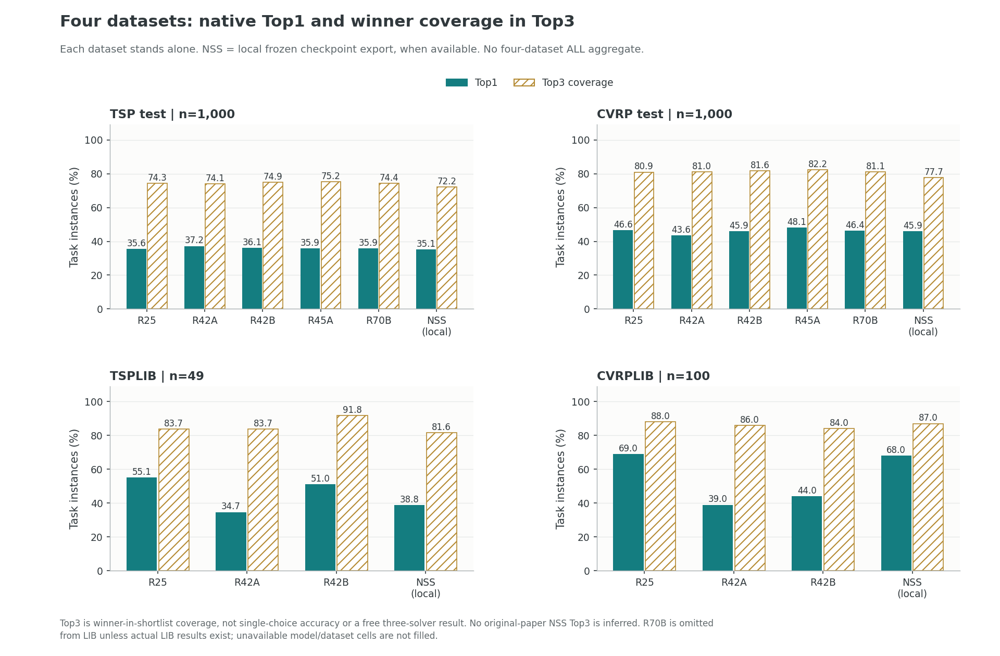
图9：四项数据集的Top1/Top3，缺失结果保持缺失。
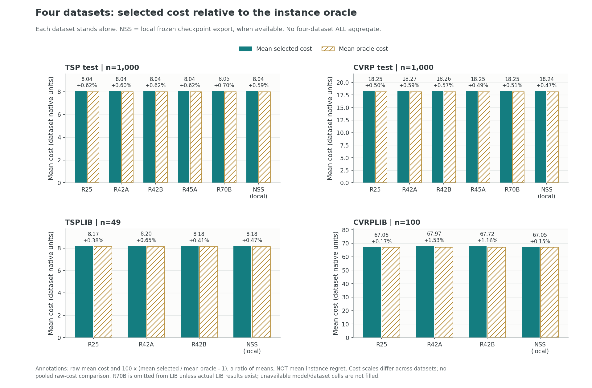
图10：准确率优势不必然是选择成本优势。
10. 规模权重和评估目标会改变“更好”的含义
若每例relative regret为r，Oracle成本为c*，则：
均值成本之比 gap = sum(c* × r) / sum(c*)，而 actual regret = mean(r)。
前者按参考成本加权；规模往往与成本相关，但不是严格按节点数加权。Top1则不区分误选代价。下面以NSS CVRP test按Oracle成本四等分作描述性比较，不是训练输入或分桶策略：
| 成本四分位 | 平均规模 | 平均Oracle成本 | Top1 % | regret % | 均值之比权重 % | relative误差贡献 % | 绝对误差贡献 % |
| --- | --- | --- | --- | --- | --- | --- | --- |
| 1 | 198.564 | 9.694 | 34.800 | 0.912 | 13.347 | 40.013 | 25.899 |
| 2 | 265.316 | 14.209 | 42.800 | 0.696 | 19.562 | 30.545 | 29.157 |
| 3 | 282.304 | 19.856 | 48.400 | 0.437 | 27.336 | 19.184 | 25.380 |
| 4 | 363.288 | 28.876 | 57.600 | 0.234 | 39.755 | 10.258 | 19.564 |
最高成本四分位占均值之比权重约39.75%，最低只占13.35%；而每例平均regret给两组各25%的实例权重。这是实质差别，但不能据此宣称它造成了47%平台。此外，R45A、R60B、R70B各自现有validation历史中，Top1最佳和regret最佳恰好同一轮，因此最近这些锁定结果也不能简单归咎于“只差一个选型指标”。
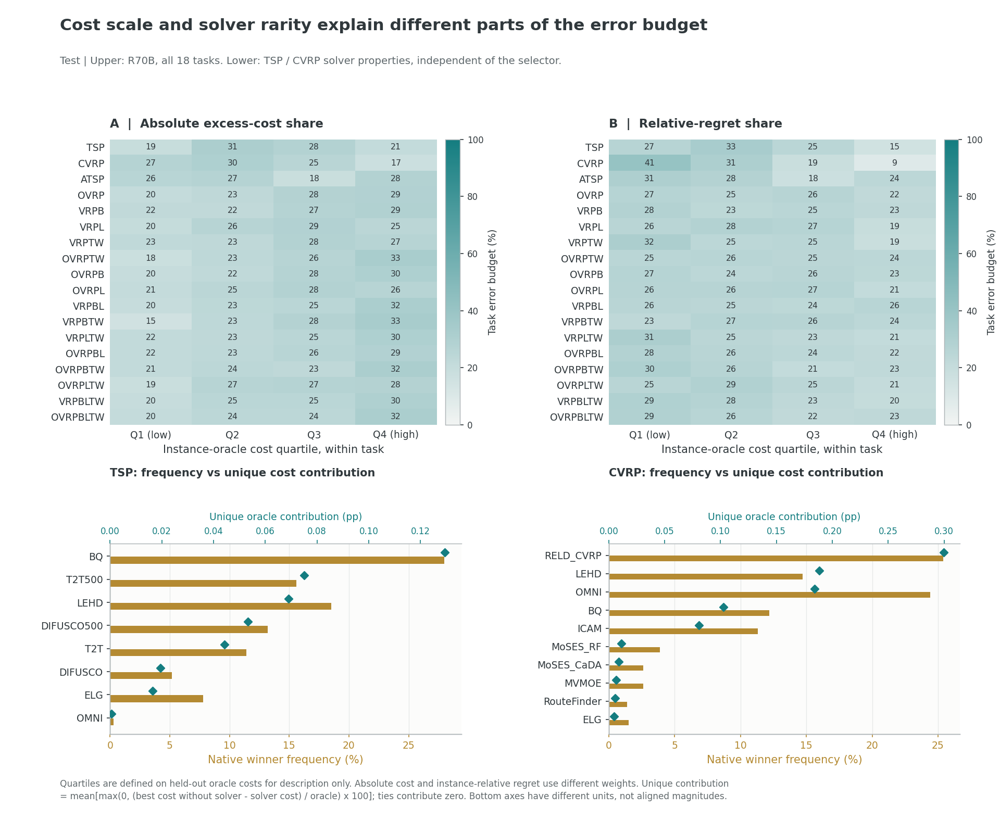
图11：评价权重与不同方法的独有成本贡献。
11. 训练曲线排除不了什么？
R70B锁定点完整train Top1约50.89%、val48.38%；末期train58.14%而val45.32%。R45A末期train50.22%、val49.02%。因此历史中既有显著过拟合，也有选中模型区分能力有限，不能把所有失败归为一种原因。
同样，“能把R49的2,000例背到100%”不等于当前完整系统在优化充分后只能到这个水平；“训练验证接近”也不等于没有可学信息。近期版本的初始化、正则化、任务组织和预算并不全相同，历史曲线是定位证据，不是一个干净的容量或loss消融。
置信度图只描述softmax分数诱导的行为。NSS排序分数不是已经校准的winner后验；ECE不同不能独立解释谁的argmax更好。
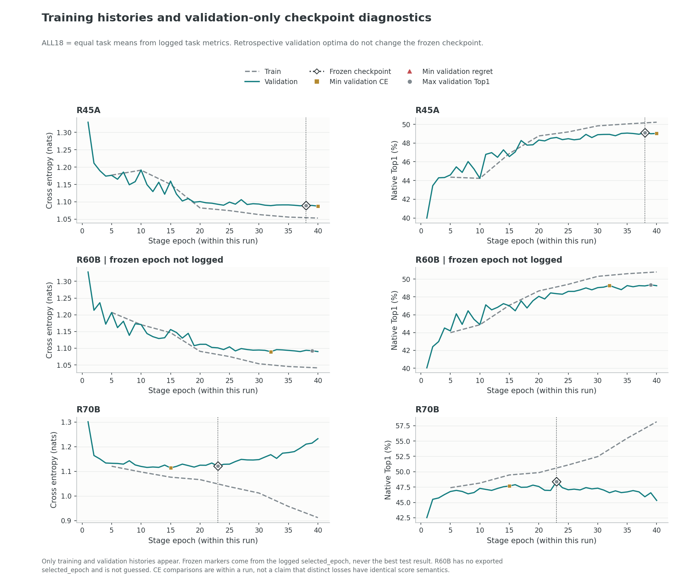
图12：优化曲线与冻结选型，不能把不同版本当独立seed。
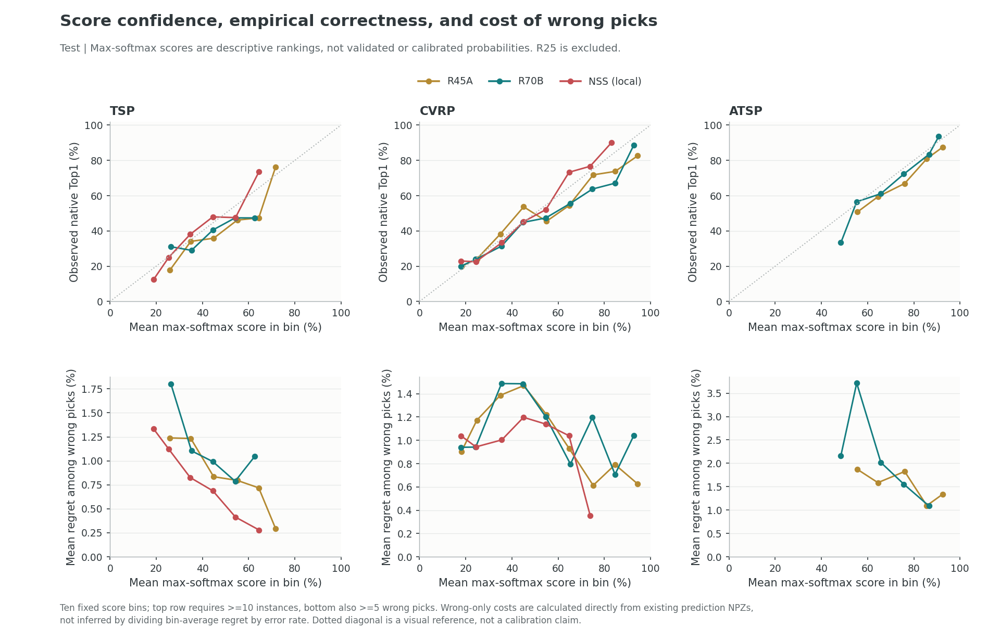
图13：置信度与错误成本，仅为描述，不据此调阈值。
12. 哪些可观察条件能跨实例迁移？
12.1 简单统计已经能解释一部分稳定规律
所有规则只使用train。规模先验按精确规模向训练四分位箱、再向问题总体平滑（伪计数20）；分布外规模回退问题总体。浅树预先固定深度3、最小叶节点200，不搜索深度或调参；每个问题分别拟合winner树和完整gap向量树，不是一棵跨18任务共享的树。它们是统计探针，不是本轮新增的神经模型，也不是与共享网络严格匹配容量/共享方式的结构对照。
下面的majority与mean_gap分别追求正确次数和relative成本，不混成一个基线：
| 训练定义策略 | Val Top1 % | Test Top1 % | Val regret % | Test regret % |
| --- | --- | --- | --- | --- |
| gap_tree_leaf_mean_gap | 44.3778 | 43.4056 | 1.2345 | 1.2508 |
| global_sbs | 37.7667 | 37.8278 | 2.0221 | 2.0322 |
| majority | 42.5611 | 42.2000 | 1.7882 | 1.7400 |
| mean_gap | 41.8944 | 41.9222 | 1.6401 | 1.6053 |
| winner_tree_leaf_majority | 46.4556 | 46.1944 | 1.0372 | 1.0571 |
深度3的winner树达到test 46.19%，比规模多数先验42.20%强，却仍未超过R45A 47.91%及其成本表现。这说明粗几何/约束统计能够利用真实信号，同时复杂模型相对于这种低成本描述的增量也没有想象中大。这不是树已逼近理论极限，而是目前观察到的可利用规律有相当部分很粗粒度。
12.2 能明确写出来的偏好反转
CVRP以容量归一化的平均需求0.0468134作train中位数边界，规模分箱也是train确定。规模162至277时，低需求区更偏RELD_CVRP，高需求区更偏OMNI；规模278至389也如此。下表正值表示A平均比B便宜，单位是相对完整候选池Oracle的百分点。
| 区域 | A | B | Train数 | Val数 | Test数 | Train优势 pp | Val优势 pp | Test优势 pp |
| --- | --- | --- | --- | --- | --- | --- | --- | --- |
| CVRP / demand_quantile 2 | OMNI | RELD_CVRP | 935 | 90 | 107 | -3.752 | -3.781 | -3.924 |
| CVRP / demand_quantile 3 | OMNI | RELD_CVRP | 1584 | 170 | 167 | 0.482 | 0.591 | 0.506 |
| CVRP / demand_quantile 4 | OMNI | RELD_CVRP | 1179 | 119 | 117 | -3.324 | -3.376 | -4.032 |
| CVRP / demand_quantile 5 | OMNI | RELD_CVRP | 1303 | 120 | 124 | 0.637 | 0.761 | 0.777 |
| ATSP / size_bin 0 | UNICO_MatPOENet | ICAM_ATSP | 2604 | 273 | 273 | 11.387 | 11.959 | 10.860 |
| ATSP / size_bin 1 | UNICO_MatPOENet | ICAM_ATSP | 2476 | 247 | 247 | 5.511 | 5.503 | 5.650 |
| ATSP / size_bin 2 | UNICO_MatPOENet | ICAM_ATSP | 2460 | 240 | 240 | -1.694 | -1.963 | -1.957 |
| ATSP / size_bin 3 | UNICO_MatPOENet | ICAM_ATSP | 2460 | 240 | 240 | -6.980 | -7.112 | -7.147 |
ATSP则有很强的规模分段偏好，解释了为什么规模先验已达约78%。这两种现象都是实际数据支持的“不同方法擅长不同区域”，不是从方法名称或论文印象猜出来的。
闭合VRPTW也有可迁移的粗结构：训练浅树按depot距离、客户规模、服务与时间余量划分，分别偏向RELD、MoSES、RouteFinder。仅此已将test Top1从规模先验27.8%提高到40.4%；R45A为43.5%。相反，OVRPTW同样深度的树只有44.8%，与规模多数先验44.4%接近。任务之间的差别是真实的，不能统称“TW都容易/都困难”。
完整规则与所有支持度见区域表；不只保留看起来有效的区域。部分规则由train标签发现，其train效果会乐观；区域相互重叠，不能把多个一致方向当成独立重复实验。稳定平均优势也不等于每个实例都能选对，更不能证明当前模型遗漏了全部这些条件。
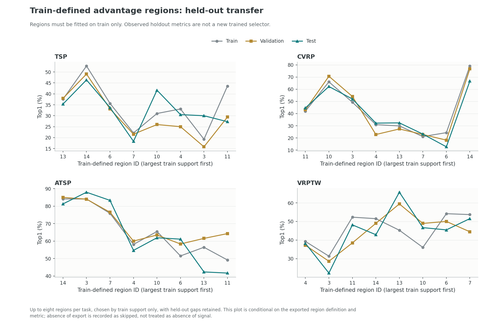
图14：固定训练树的叶区域在train、val、test上的迁移；不是在test重新划分。
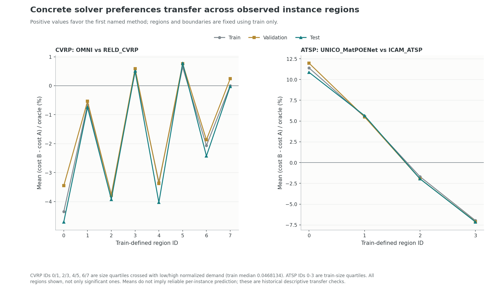
图15：需求/规模改变时，方法平均优势确实会反转。
12.3 相同信息下，准确率目标与成本目标确实不同
固定同一套训练规模分箱，只改变格子里的决策目标：TSP test用mean-gap而非多数winner，Top1下降7.3个百分点，regret却降低0.507个百分点；CVRP对应下降2.8个百分点、regret降低0.711个百分点。VRPTW反而可以同时提高Top1与降低成本。可见目标冲突在一些区域存在，在另一些区域并非不可避免。
这比比较两个不同架构的最终分数更能隔离“目标不同”的影响，但仍然只在当前粗信息分区上成立，不能直接推出换某个训练loss一定有效。逐任务结果见同区域决策取舍。
12.4 常规留出与LIB需要分开解释
18任务常规val/test规模都在各自train范围内；所测非规模统计的最大标准化均值偏移不到0.10、最大KS距离约0.06。这不支持很大的低阶统计来源差异，但不能证明联合分布一致或覆盖充分。
LIB明显不同：TSPLIB有14.3%、CVRPLIB有32%的实例超出训练规模；至少一项非规模特征超出train范围的比例分别87.8%/52%。后者受特征个数影响，不能当作严格OOD概率，但与规模、SMD、KS一起看，分布外风险确实更大。
| 问题 | 划分 | 最小规模 | 最大规模 | 规模外推 % | 任一非规模特征越界 % | 最大绝对SMD | 最大KS距离 |
| --- | --- | --- | --- | --- | --- | --- | --- |
| TSP | val | 50 | 499 | 0.000 | 0.100 | 0.068 | 0.055 |
| TSP | test | 50 | 499 | 0.000 | 0.500 | 0.059 | 0.044 |
| TSP | TSPLIB | 51 | 1002 | 14.286 | 87.755 | 1.661 | 0.772 |
| CVRP | val | 50 | 499 | 0.000 | 0.800 | 0.073 | 0.054 |
| CVRP | test | 50 | 499 | 0.000 | 0.200 | 0.065 | 0.041 |
| CVRP | CVRPLIB | 100 | 1000 | 32.000 | 52.000 | 1.653 | 0.696 |
| ATSP | val | 20 | 100 | 0.000 | 0.300 | 0.037 | 0.032 |
| ATSP | test | 20 | 100 | 0.000 | 0.200 | 0.044 | 0.031 |
| VRPTW | val | 50 | 100 | 0.000 | 1.400 | 0.074 | 0.048 |
| VRPTW | test | 50 | 100 | 0.000 | 1.000 | 0.085 | 0.044 |
| OVRPTW | val | 50 | 100 | 0.000 | 1.600 | 0.058 | 0.040 |
| OVRPTW | test | 50 | 100 | 0.000 | 1.100 | 0.086 | 0.059 |
因此，CVRPLIB上R42B显著差于NSS/R25，不能只拿synthetic test接近就解释为偶然；需要保留独立的外推评价。不过LIB样本小，当前证据不允许指定是哪一项特征变化造成下降。
几何距离统计在大于128客户时使用按坐标固定选取的128客户；最近邻统计因此是该子集的统计，不假装完整图最近邻。所有原实例、标签、划分不变。完整英文方法说明与辅助表见regions/findings.md。
对剩余信号的一项受控检查
用R70训练分数建立条件表：训练规模四分位、有序预测Top2方法对、预测分数差三分位，保留原模型选择方向；再只增加一个预先固定的输入描述符。TW为局部有向slack均值，ATSP为矩阵不对称均值，其他为最近邻距离均值乘规模平方根。切分点来自train，不按test错误挑特征；每格至少40例、伪计数50。score与feature格均收缩到同一个规模/方法对父格，无支持的feature格退回score表；常量特征必须不改变预测，18任务均通过此性质检查。
在完全相同的格子里分别按非并列两方法胜负频率、平均相对成本差决定二者顺序，不新训神经网络。前者不是原生全池winner多数：即使真正winner在Top2外，两候选仍可有二者间胜负。原生winner目标对照使用上面的regions表；此处只比较pairwise决策。结果仍按完整候选池计Top1/regret：
| 划分 | 条件信息 | 决策目标 | Top1 % | regret % | 直接格子覆盖 % | 父格回退 % |
| --- | --- | --- | --- | --- | --- | --- |
| val | score_summary | pair_accuracy | 48.2889 | 0.9911 | 95.7778 | 4.2222 |
| val | score_summary | pair_relative_cost | 48.5389 | 0.9821 | 95.7778 | 4.2222 |
| val | score_summary_plus_feature | pair_accuracy | 48.1611 | 0.9899 | 86.9111 | 13.0889 |
| val | score_summary_plus_feature | pair_relative_cost | 48.3444 | 0.9771 | 86.9111 | 13.0889 |
| test | score_summary | pair_accuracy | 47.1333 | 0.9913 | 95.2722 | 4.7278 |
| test | score_summary | pair_relative_cost | 47.3722 | 0.9859 | 95.2722 | 4.7278 |
| test | score_summary_plus_feature | pair_accuracy | 47.1000 | 0.9995 | 86.2667 | 13.7333 |
| test | score_summary_plus_feature | pair_relative_cost | 47.1278 | 0.9937 | 86.2667 | 13.7333 |
训练分数本身是样本内预测，所以条件表仍可能过拟合；稀疏区域回退率必须一起看。这个检查回答的是这些粗描述符是否有额外可迁移价值，不是穷尽全部输入信息，也不是证明Encoder或标签的极限。逐任务结果、条件平均差的方向迁移见 residual_signal.csv、residual_region_transfer.csv。
这里有小幅可恢复的决策收益，不能一概说没有信号。 仅用粗分数条件，mean-gap表在val从R70B的48.38%/0.9888%变为48.54%/0.9821%，test从46.72%/1.0052%变为47.37%/0.9859%。这提示同一模型的输出与实际成本关系仍有少量可利用空间，但仍低于R45A的47.91%/0.9432%，不构成整体突破，也不是一次正式新模型测试。
再增加描述符后，val成本略好但Top1下降，test两项都比score成本表差；pairwise频率分支也呈混合结果。86.27%的test实例有足够自身格子支持，但计数够不等于估计可靠。准确结论是“粗分数条件可恢复一小部分R70退化；这一个额外描述符未带来跨划分、跨指标一致的明显优势”，不是“原始输入不存在剩余规律”。
评审发现初版表丢掉Top2方向且多做一层收缩，已局部修正，未调整分桶、支持门槛或特征；初版留在 residual_initial/，不用于最终结论。原模型成绩、其余统计及checkpoint均未改。
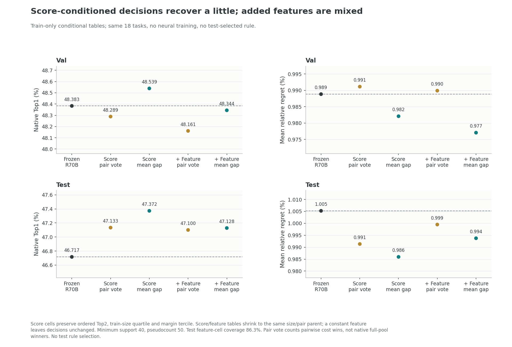
图16：保留选择方向后，分数条件表有小幅收益；额外描述符结果混合。
13. 已知数据边界不能被性能图掩盖
带B旧任务与不在该语义冲突范围内的10任务分开列出：
| 模型 | 范围 | Test Top1 % | Test regret % |
| --- | --- | --- | --- |
| R45A | B8_legacy_semantics | 51.1250 | 1.1309 |
| R45A | nonB10 | 45.3400 | 0.7930 |
| R45A | MVRP15 | 46.7267 | 1.0258 |
| R60B | B8_legacy_semantics | 51.5125 | 1.1239 |
| R60B | nonB10 | 45.6300 | 0.7938 |
| R60B | MVRP15 | 47.0533 | 1.0217 |
| R70B | B8_legacy_semantics | 50.1000 | 1.1858 |
| R70B | nonB10 | 44.0100 | 0.8608 |
| R70B | MVRP15 | 45.4467 | 1.0875 |
这不是在本轮排除B任务或修改标签；只是显示平台在非B部分也存在，不能把全部失败归结于已发现的语义冲突。反过来，也不能因为模型能学习旧标签，就宣称跨solver可行域已经统一。
已知与未知必须分开：目前没有全候选池完整重复求解分布，不能估算总体“标签噪声”；没有新的独立测试集，不能用多轮历史test声称严格确认；没有所有内部表示的充分性检测，不能定位为某一个具体网络模块。
14. 是否值得继续，以及该停止什么
值得继续研究“在可比较的场景中利用实例差异做单方法选择”；不值得继续把同一批历史test的微小波动包装成结构突破。 现有数据已经反驳了“完全没有实例信号”，但还没有证明剩余空间能被当前训练方式恢复。
后续投入应分问题、按证据排序：
- 已有效的匹配区域：CVRP、闭合TW保留为正对照。要求新思路超过训练定义的条件先验，并解释减少了哪类跨方法风险，不能只看ALL。
- 长期漏选的有效方法：依据train里稳定的获胜区域定义假设，在新冻结留出上检查；例如TSP LEHD、TW中的其他方法族。高winner频率本身不是强行均衡输出的理由。
- 固定强候选但细粒度难分的区域：开放TW等已有多轮阴性结果。若本报告的简单条件与残差检查也找不到可迁移增量，先承认“现有分析未找到”，不自动再加一个头或宣布随机。
- 任务有效性：旧B语义问题仍是研究结论的边界，遵照你的决定本轮只记录；未来要发表统一可行域的比较时仍需明确处理，不能由新网络消除。
- 方法与目标的声明：若研究目标是单方法原生Top1，就保持这一目标；若研究实际求解成本，必须同时报告误选的大小与推理预算。Top-k运行多个solver不是修好了单方法Top1。
本报告不推荐一个未经验证的新架构，也不承诺修一处就能到60%/70%。最值得提出的新假设应当写成“哪个train可观察条件、对哪组部署、预期减少哪类代价”，而不是“下一种Attention可能更强”。
15. 文件、复现和研究依据
复现仅统计与渲染，不训练：
source /public/home/shiys/miniconda3/etc/profile.d/conda.sh
conda activate easynco
cd /public/home/shiys/0selection2
python -B -m code.V4.plateau_analysis
python -B -m code.V4.plateau_regions run
python -B -m code.V4.plateau_residual
python -B -m code.V4.plateau_figures
python -B -m code.V4.plateau_report
NSS已有缓存，不需要再次推理；缺缓存时使用 plateau_nss_export.py --help 中的冻结导出入口。主代码没有覆盖历史结果或checkpoint。
数据表索引